컴퓨터 한 대는 어떻게 일하나요
강의는 분산 시스템으로 가기 전에 컴퓨터 한 대부터 봐요. 컴퓨터는 0과 1, 즉 비트로 모든 걸 다뤄요. 8비트가 1바이트이고, 1바이트로 글자 하나나 숫자 하나를 나타내요. 여기서 킬로바이트, 메가바이트, 기가바이트, 테라바이트로 커져요.
데이터가 머무는 네 층
아래 슬라이드는 강의가 다루는 부품을 한 화면에 모은 그림이에요. 왼쪽 위 RAM(Random Access Memory), 왼쪽 아래 디스크, 오른쪽 초록 상자 안에 CPU(Central Processing Unit)와 캐시가 있고, 가운데 화살표가 컴파일러예요. Java·C++·Python 코드가 컴파일러를 거쳐 0101 기계어가 되어야 CPU가 실행할 수 있다는 뜻이에요.
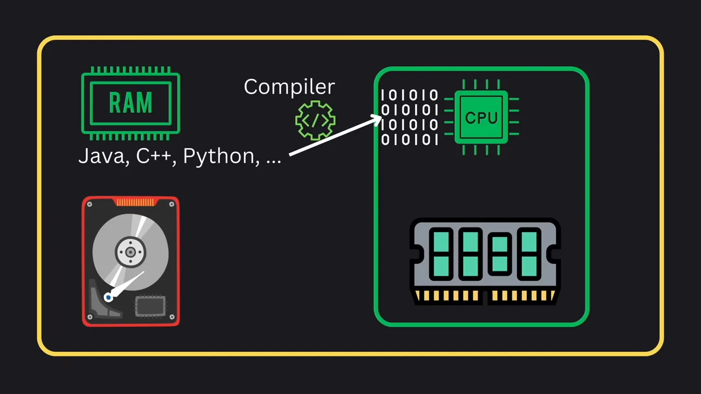
층마다 하는 일이 달라요.
- 디스크(HDD(Hard Disk Drive)·SSD(Solid State Drive)): 전원이 꺼져도 데이터가 남는 비휘발성 저장소예요. 운영체제, 앱, 사용자 파일이 여기 있어요. 크기는 수백 GB에서 몇 TB예요. SSD는 비싸지만 HDD보다 훨씬 빨리 읽어요.
- RAM: 지금 실행 중인 프로그램의 변수, 중간 계산 결과, 실행 스택을 담아요. 읽고 쓰기가 빠르지만, 전원이 꺼지면 내용이 사라지는 휘발성 메모리예요. 일반 기기는 몇 GB, 고성능 서버는 수백 GB까지 있어요.
- 캐시: RAM보다 작아서 보통 MB 단위예요. 대신 L1 캐시는 몇 나노초면 닿을 만큼 빨라요. CPU는 L1 캐시를 먼저 보고, 없으면 L2와 L3, 마지막으로 RAM을 봐요. 자주 쓰는 데이터를 여기 두어 평균 접근 시간을 줄여요.
- CPU: 명령을 가져오고, 해석하고, 실행하는 두뇌예요. 프로그램에 적힌 연산은 결국 CPU가 처리해요.
강의가 읽어 준 속도를 한 축에 그려 보면 차이가 확 보여요. HDD 막대는 거의 보이지 않을 만큼 짧아요.
이 부품들을 잇는 게 메인보드예요. 슬라이드에서 노란 테두리가 메인보드이고, RAM·디스크·CPU 사이를 가는 선이 잇고 있어요. 데이터는 이 길을 따라 부품 사이를 오가요.
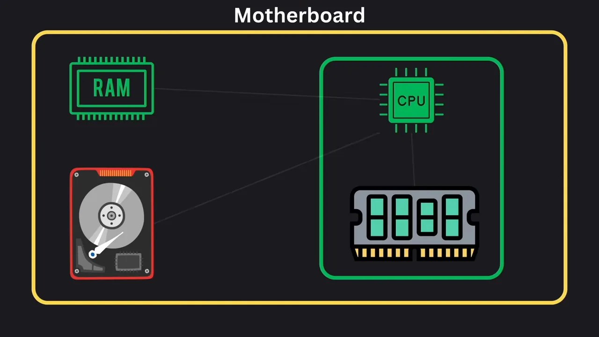
실제 서비스는 어떻게 돌아가나요
이번엔 운영 중인 앱 전체를 위에서 내려다봐요. 슬라이드가 부품을 하나씩 더해 가다가 마지막에 아래 그림이 돼요. 왼쪽 위 노트북에서 시작한 코드가 CI(Continuous Integration)/CD를 지나 서버 세 대로 가고, 사용자 요청은 아래의 Load Balancer를 거쳐 서버에 닿아요. 오른쪽 위가 외부 저장소, 오른쪽 아래가 Sentry와 pm2가 붙은 로깅·모니터링, 왼쪽 아래가 알림 서비스예요.
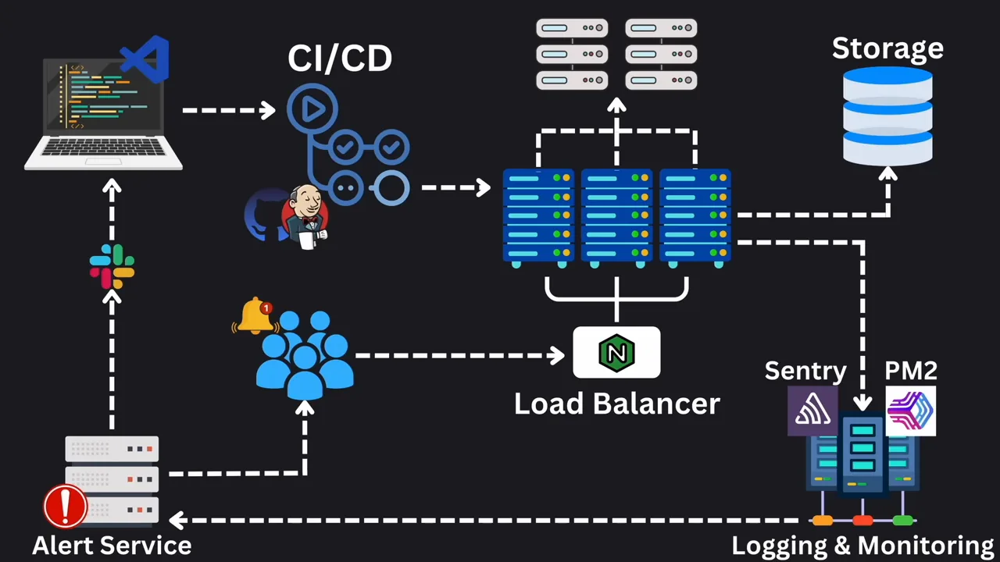
부품별로 정리하면 이래요.
- CI/CD 파이프라인: 코드가 저장소에서 테스트와 검사를 거쳐 사람 손 없이 운영 서버까지 가요. Jenkins나 GitHub Actions로 구성해요.
- 로드 밸런서와 리버스 프록시: Nginx 같은 도구가 사용자 요청을 여러 서버에 고르게 나눠요. 트래픽이 갑자기 몰려도 서비스가 매끄럽게 돌아가요.
- 외부 저장소: 데이터는 운영 서버 안이 아니라 네트워크로 연결된 별도 저장 서버에 둬요. 서버는 다른 서비스와도 통신해요.
- 로깅과 모니터링: 로그는 운영 서버 밖 서비스에 두는 게 표준이에요. 백엔드는
pm2, 프론트엔드는 Sentry로 오류를 실시간으로 모아요. - 알림: 실패한 요청이나 이상 징후가 잡히면 알림 서비스가 움직여요. 사용자에게는 '문제가 생겼어요'부터 '결제 실패'까지 알림이 가고, 개발자에게는 Slack 채널로 바로 떠요.
문제가 생기면 어떤 순서로 움직이나요
강의가 말로 설명한 대응 순서를 한 줄로 그려 봤어요.
flowchart LR A["로깅이 실패 감지"] --> B["알림 서비스"] --> C["Slack 채널에 알림"] C --> D["로그에서 원인 찾기"] --> E["스테이징에서 재현"] --> F["핫픽스 배포"]
먼저 로그를 뒤져 패턴이나 이상한 점을 찾아요. 그다음 문제를 안전한 곳에서 재현해요. 강의는 운영 환경에서 직접 디버깅하지 않는 걸 철칙으로 꼽아요. 사용자가 디버깅의 영향을 받으면 안 되니까요. 아래 슬라이드에서 위쪽 Staging 서버에 벌레 아이콘이 있고, 아래 Production으로 가는 길에는 막힘 표시가 있어요.
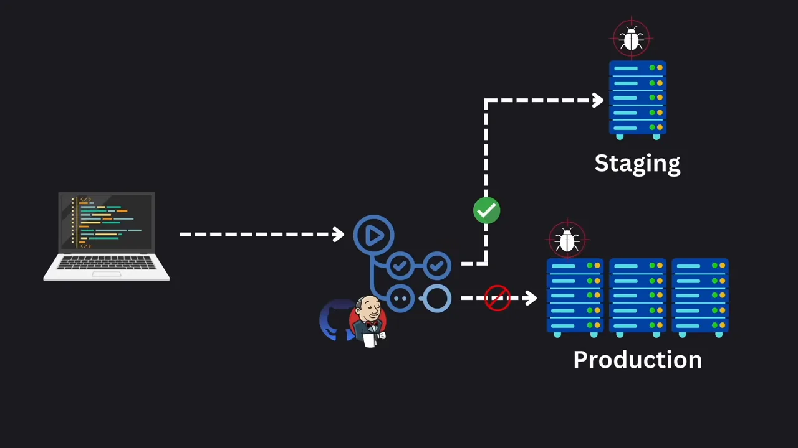
고친 뒤에는 핫픽스를 먼저 내보내 서비스를 살려요. 더 근본적인 해결은 그다음에 해요.
좋은 설계의 조건: CAP, 가용성, 속도
좋은 설계란 뭘까요? 강의는 확장성(사용자가 늘어도 버팀), 유지보수성(다음 개발자가 이해하고 고칠 수 있음), 효율(자원을 낭비하지 않음)을 꼽아요. 그리고 실패를 미리 계획해서 잘 돌 때뿐 아니라 일이 틀어질 때도 침착하게 버티는 시스템이어야 한다고 덧붙여요. 슬라이드에서는 이 마지막 조건이 오른쪽 끝 Reliability 칸으로 따로 그려져 있어요.
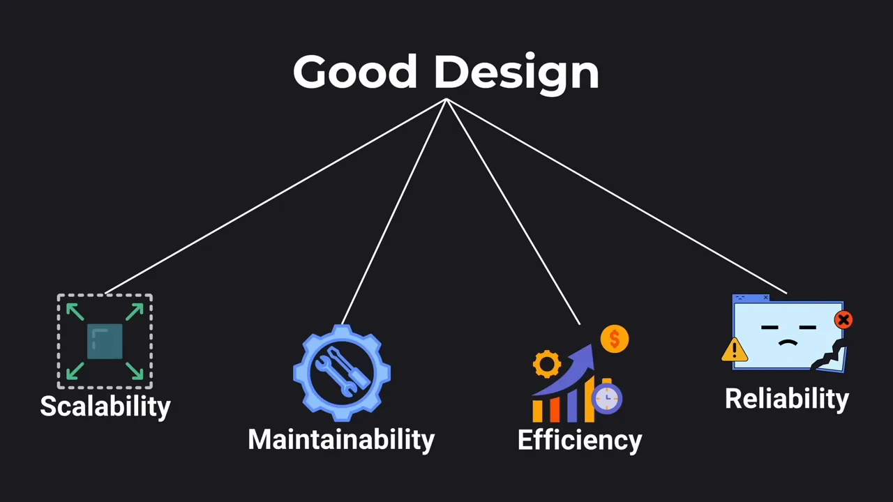
시스템 설계의 중심에는 세 가지 일이 있어요. 데이터를 옮기기는 요청이 서버로, 데이터가 DB(Database) 사이로 빠르고 안전하게 흐르게 하는 일이에요. 저장하기는 SQL(Structured Query Language)이냐 NoSQL이냐를 고르는 데서 끝나지 않아요. 접근 패턴, 인덱싱 전략, 백업까지 이해해야 해요. 변환하기는 로그를 모아 분석하는 것처럼 원재료 데이터를 의미 있는 정보로 바꾸는 일이에요.
CAP 정리: 셋 중 둘
CAP 정리는 컴퓨터 과학자 에릭 브루어의 이름을 따 브루어 정리라고도 불러요. 분산 시스템에서 무엇을 내줄지 고를 때 기준이 돼요. 세 글자는 이런 뜻이에요.
- 일관성(Consistency): 모든 노드가 같은 시점에 같은 데이터를 가져요. 구글 문서에서 한 사람이 고치면 모두에게 바로 보이는 것과 같아요.
- 가용성(Availability): 뒤에서 무슨 일이 있든 늘 요청에 응답해요. 언제 들어가도 주문을 받는 온라인 상점 같아요.
- 파티션 내성(Partition tolerance): 노드 사이 통신이 끊겨도 시스템이 계속 돌아가요. 한 명이 연결이 끊겨도 나머지는 계속 떠드는 단체 채팅방 같아요.
아래 벤 다이어그램에서 원 세 개가 겹치는 자리에 CA, CP, AP가 적혀 있어요. 가운데 세 원이 모두 겹치는 칸은 비어 있어요. 셋을 동시에 가질 수는 없다는 뜻이에요.
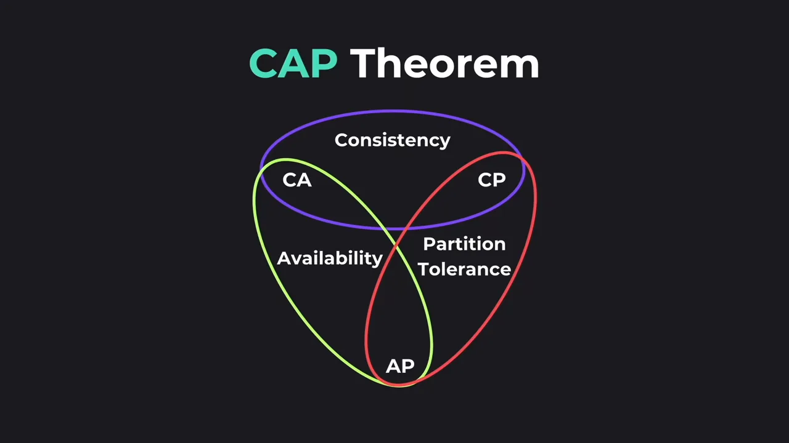
강의의 예는 은행이에요. 돈 계산은 틀리면 안 되니 일관성과 파티션 내성을 고르고, 일부 거래가 잠시 늦어지는 걸 감수해요. 즉 가용성을 잠깐 내주는 거예요. 읽기에 최적화하면 쓰기가 느려지는 것처럼, 모든 설계 결정에는 대가가 따라요. 강의는 완벽한 해답이 아니라 이 상황에 가장 맞는 해답을 찾는 게 설계라고 정리해요.
가용성은 9의 개수로 말해요
가용성은 사용자가 필요할 때 시스템이 살아 있느냐를 퍼센트로 잰 거예요. 슬라이드 아래 두 줄이 핵심이에요. 99.9%면 1년에 8.76시간까지 멈출 수 있고, 99.999%면 5분이에요. 업계에서 목표로 삼는 '파이브 나인'이 이 99.999%예요.
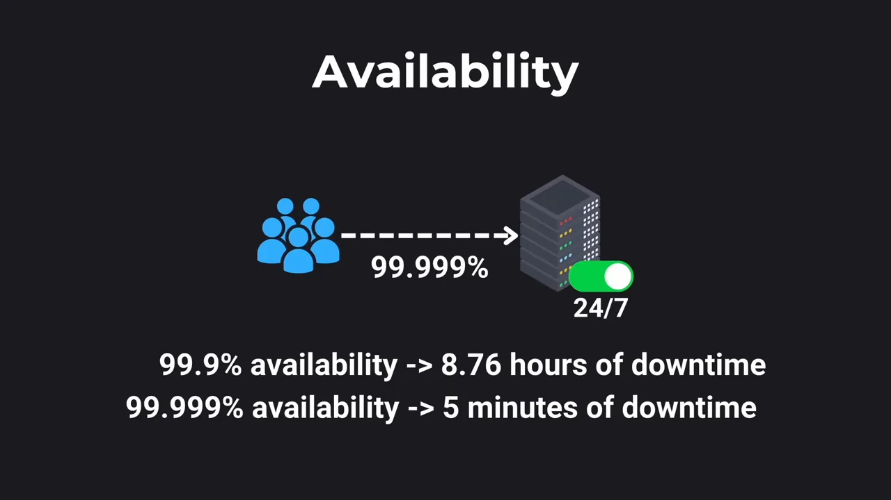
가용성을 두고 두 가지 약속을 해요. 위쪽 SLO(Service Level Objective)는 스스로 정한 목표예요. 슬라이드의 예는 '요청의 99.9%에 300ms 안에 응답'이에요. 아래쪽 SLA(Service Level Agreement)는 고객과 맺는 공식 계약이고, 계약서 아이콘 옆에 99.99% 가용성이 적혀 있어요. 이걸 못 지키면 환불이나 보상을 해 줘야 해요.
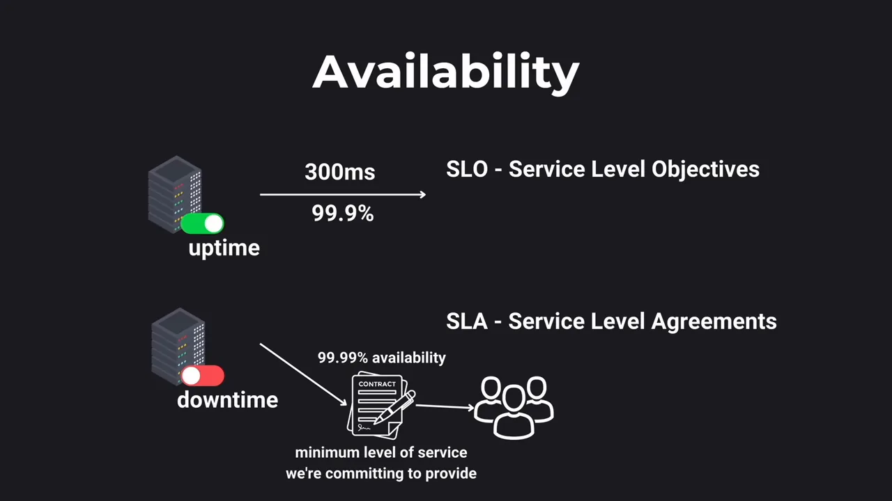
장애에 강한 시스템은 예상 못 한 일을 전제로 해요. 언제든 넘겨받을 예비 시스템을 두거나, 일부 기능이 멈춰도 핵심 기능은 살아 있도록 우아하게 성능을 낮춰요. 이걸 재는 말이 셋이에요. 아래 슬라이드 왼쪽은 서버 한 대가 죽어도 로드 밸런서가 나머지로 요청을 보내는 모습이고, 오른쪽에 세 단어가 있어요.
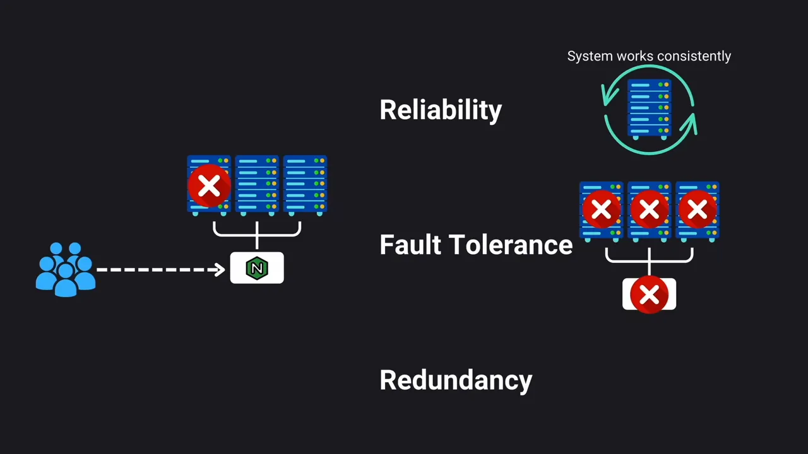
속도: 처리량과 지연 시간
속도는 두 축으로 재요. 슬라이드 왼쪽 처리량은 일정 시간 동안 감당하는 양이에요. 서버는 RPS(Requests Per Second), 데이터베이스는 QPS(Queries Per Second), 데이터 전송은 초당 바이트로 재요. 값이 클수록 동시에 더 많은 사용자를 받을 수 있어요. 오른쪽 지연 시간은 요청 하나에 응답이 오기까지 걸리는 시간이에요.
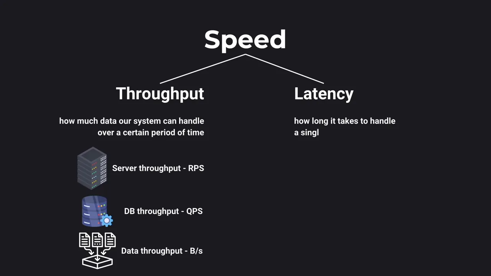
둘은 서로 당겨요. 작업을 묶어서 처리하면 처리량은 늘지만 한 건당 기다리는 시간도 늘 수 있어요. 강의는 이 섹션을 이렇게 마무리해요. 설계를 잘못하면 성능 병목부터 보안 구멍까지 나중에 큰 문제가 돼요. 코드는 쉽게 리팩터링하지만 시스템을 다시 설계하는 건 엄청난 일이에요. 그래서 처음부터 설계에 시간을 들여야 해요.
네트워크 기초
네트워크의 기본은 IP(Internet Protocol) 주소예요. 네트워크 위 기기 하나하나를 구분하는 고유한 번호예요. IPv4는 32비트라 약 40억 개 주소를 만들 수 있어요. 기기가 너무 늘어서 지금은 128비트를 쓰는 IPv6로 옮겨 가고 있어요.
컴퓨터끼리는 데이터를 패킷으로 쪼개 주고받아요. 아래 슬라이드에서 상자 아이콘이 패킷이고, 회색 상자가 그 안의 IP 헤더예요. 맨 아래 두 줄에 보내는 쪽 192.168.1.1과 받는 쪽 172.16.254.1이 적혀 있어요. 이 정보 덕분에 패킷이 제 목적지를 찾아가요.
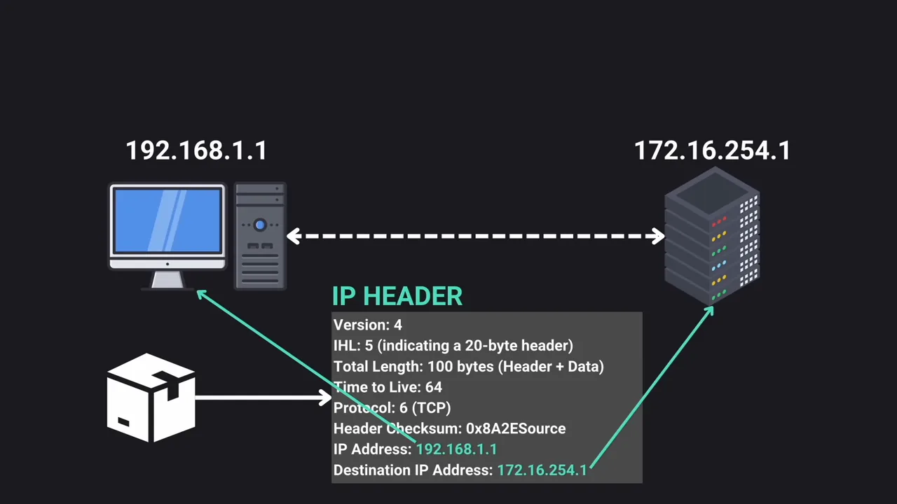
이 규칙을 정한 게 인터넷 프로토콜이에요. IP 계층 위에는 애플리케이션 계층이 있어요. 웹 브라우징이라면 메서드, URL(Uniform Resource Locator), 호스트 같은 정보가 HTTP(Hypertext Transfer Protocol) 형식으로 담겨서, 받는 쪽이 데이터를 제대로 해석해요.
TCP와 UDP
그 사이 전송 계층에 TCP와 UDP(User Datagram Protocol)가 있어요. TCP는 택배가 도착했는지뿐 아니라 빠진 게 없는지까지 확인하는 배달원 같아요. 아래 TCP 헤더에는 출발 포트 53728, 목적지 포트 80, 그리고 빨간 동그라미로 강조한 순서 번호가 있어요. 순서 번호로 패킷 순서를 추적해서, 데이터가 빠짐없이 순서대로 도착하게 해요.
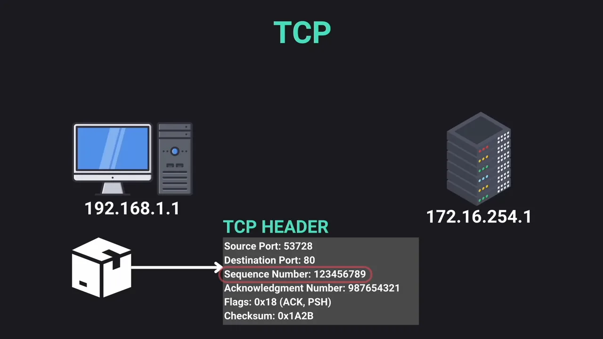
TCP는 데이터를 보내기 전에 3-way 핸드셰이크로 연결부터 맺어요. 슬라이드의 세 화살표가 SYN, SYN + ACK, ACK 세 번의 인사예요.
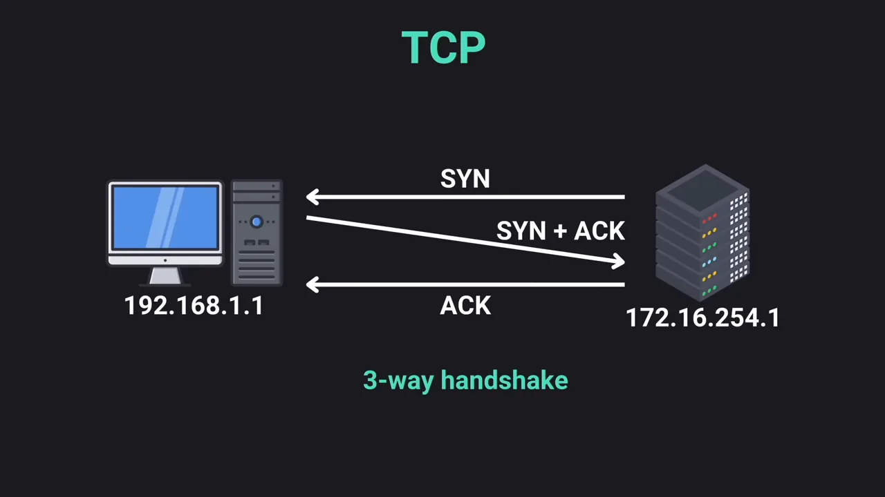
UDP는 반대로 연결을 맺지 않고 바로 보내요. 도착도 순서도 보장하지 않지만 그만큼 빨라요. 그래서 영상 통화나 라이브 스트리밍처럼 조금 잃어도 빨라야 하는 곳에 써요.
DNS: 인터넷 전화번호부
DNS(Domain Name System)는 사람이 읽는 도메인 이름을 IP 주소로 바꿔 줘요. 브라우저에 URL을 치면 DNS에 물어 IP를 알아낸 뒤 서버에 연결해요. 전체 체계는 ICANN(Internet Corporation for Assigned Names and Numbers)이 관리하고, Namecheap이나 GoDaddy 같은 등록 대행사가 ICANN의 인가를 받아 도메인을 팔아요. 슬라이드 위 두 줄이 레코드 종류예요. A 레코드는 도메인을 IPv4 주소에, AAAA 레코드는 IPv6 주소에 연결해요.
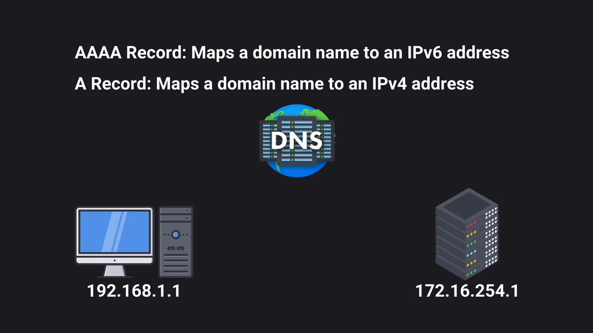
AAAA는 IPv6 주소로 연결해요. 둘 다 요청이 맞는 서버에 닿게 해 줘요.
영상 18:00에서 보기네트워크 인프라
IP 주소는 두 가지 기준으로 나눠요. 공인 IP는 인터넷 전체에서 유일하고, 사설 IP는 내부망 안에서만 유일해요. 기기에 영구히 붙는 고정 IP와 시간이 지나면 바뀌는 동적 IP도 있어요. 가정용 인터넷은 보통 동적 IP예요. LAN(Local Area Network) 안의 기기끼리는 직접 통신하고, 방화벽이 들고 나는 트래픽을 감시하고 막아요.
한 기기 안에서 서비스는 포트로 구분해요. IP 주소와 포트를 합치면 네트워크 서비스 하나를 정확히 가리켜요. 슬라이드에 자주 쓰는 포트 네 개가 있어요.
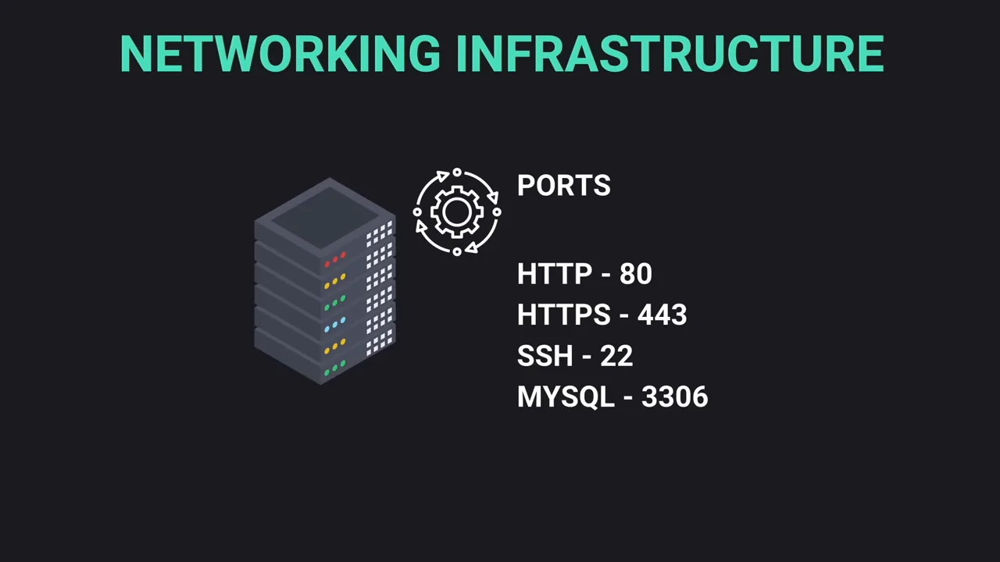
애플리케이션 계층 프로토콜
가장 흔한 애플리케이션 계층 프로토콜은 HTTP예요. TCP/IP 위에서 도는 요청-응답 프로토콜이에요. 강의는 이걸 기억이 없는 대화에 비유해요. 서버가 요청 사이의 맥락을 저장하지 않고, 요청마다 필요한 정보를 다 담아 보내요.
아래 화면은 개발자 도구에서 본 실제 요청이에요. 가운데 초록 띠가 POST /log 요청이고, 위쪽 Headers 탭에 요청 URL, 메서드 POST, 상태 코드 200 OK가 보여요. 아래 Payload 탭이 본문이에요. 헤더에는 URL과 메서드가, 본문에는 실제 내용이 들어간다는 걸 보여 줘요.
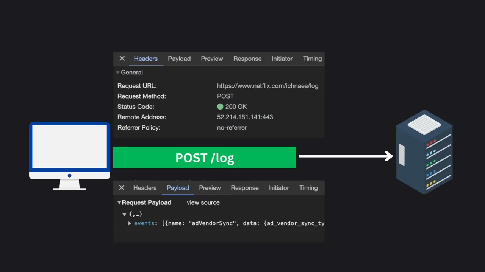
상태 코드와 메서드
응답마다 붙는 상태 코드는 앞자리로 결과를 나눠요. 슬라이드는 글씨가 작아서, 강의가 띄운 코드를 표로 옮겼어요.
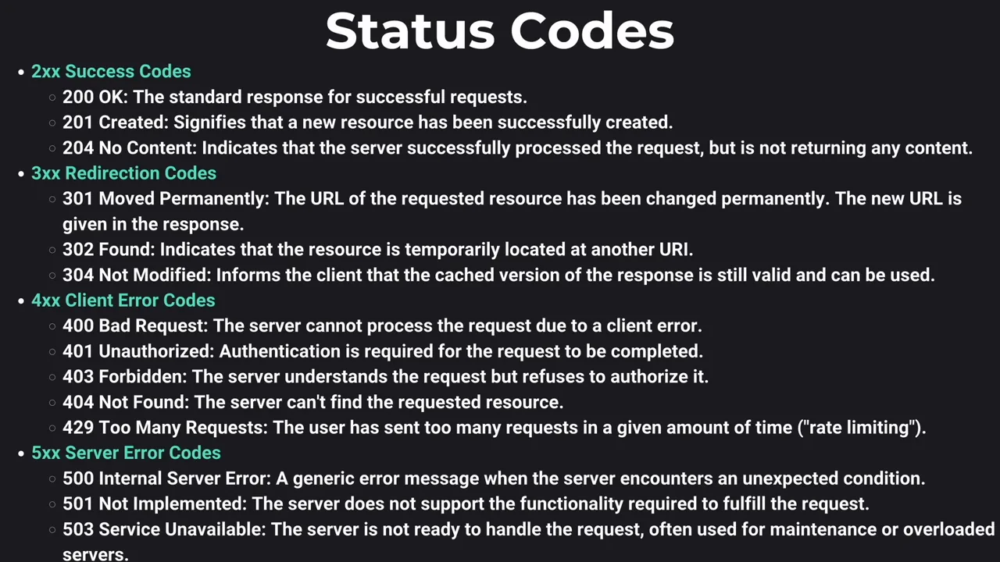
| 그룹 | 뜻 | 슬라이드에 나온 코드 |
|---|---|---|
| 2xx | 성공. 요청을 받아 처리했어요 | 200 OK, 201 Created(새 리소스 생성), 204 No Content(처리했지만 돌려줄 내용 없음) |
| 3xx | 리다이렉트. 요청을 끝내려면 추가 동작이 필요해요 | 301 영구 이동, 302 임시 이동, 304 Not Modified(캐시된 걸 그대로 써도 됨) |
| 4xx | 클라이언트 오류. 문법이 틀렸거나 처리할 수 없는 요청이에요 | 400 잘못된 요청, 401 인증 필요, 403 권한 없음, 404 없음, 429 요청이 너무 많음 |
| 5xx | 서버 오류. 서버 쪽에서 뭔가 잘못됐어요 | 500 내부 오류, 501 미구현, 503 서비스 불가(점검·과부하) |
요청에는 메서드도 붙어요. GET은 조회, POST는 생성, PUT과 PATCH는 수정, DELETE는 삭제예요.
실시간이 필요하면 WebSocket
HTTP는 클라이언트가 물어야 서버가 답하는 한 방향 구조예요. 실시간 업데이트가 필요하면 WebSocket을 써요. 연결 하나를 오래 열어 두고 양쪽이 주고받아서, 서버가 먼저 새 소식을 밀어 줄 수 있어요. 매번 HTTP 요청과 응답을 반복하는 부담이 없어서 채팅, 스포츠 실시간 중계, 주식 시세처럼 쉬지 않고 갱신되는 서비스에 맞아요.
그 밖에 알아 둘 프로토콜
- 이메일: SMTP(Simple Mail Transfer Protocol)는 서버 사이에 메일을 보내는 표준이에요. 받을 때는 IMAP(서버에 둔 메일을 여러 기기에서 다룸)이나 POP3(한 기기로 내려받아 관리)를 써요.
- 파일 전송: FTP(File Transfer Protocol)는 웹사이트 관리나 대용량 전송, 백업에 쓰는 전통적인 방식이에요. SSH는 안전하지 않은 네트워크에서도 원격 컴퓨터에 접속해 명령을 실행하거나 파일을 옮기게 해 줘요.
- 실시간 통신: 아래 슬라이드에 두 가지가 있어요. WebRTC는 플러그인 없이 브라우저끼리 음성 통화, 영상 채팅, 파일 공유를 해요. 화상 회의와 라이브 스트리밍에 꼭 필요해요. MQTT(Message Queuing Telemetry Transport)는 처리 능력과 대역폭이 작은 IoT 기기에 맞춘 가벼운 메시징이에요.
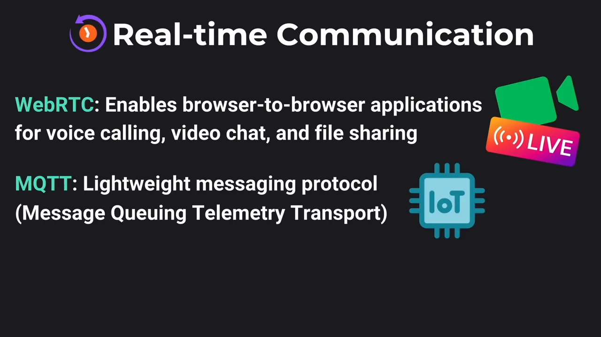
LIVE 아이콘, MQTT 옆에는 IoT 칩이 있어요. 쓰임새가 아이콘에 그대로 담겨 있어요.
영상 22:48에서 보기AMQP(Advanced Message Queuing Protocol)는 기업용 메시지 미들웨어 프로토콜로, RabbitMQ 같은 도구가 써요. 마지막으로 RPC(Remote Procedure Call)는 다른 컴퓨터에 있는 함수를 내 프로그램 안의 함수처럼 부르게 해 줘요. 네트워크 통신의 세부를 감춰 주기 때문에 개발자는 원격 함수를 로컬 함수처럼 다뤄요. 강의는 웹 서비스의 HTTP 요청이 백엔드에서 RPC 호출로 이어지거나, SMTP 서버가 내부에서 RPC로 DB와 통신하는 것처럼 많은 프로토콜이 안에서 RPC를 쓴다고 설명해요.
API 설계
강의는 Shopify 같은 전자상거래 플랫폼의 API(Application Programming Interface)를 예로 들어요. API 설계에서 정할 건 입력과 출력이에요. 아래 슬라이드 위쪽 회색 상자가 판매자가 보내는 입력이에요. 이름, 분류, 가격 19.99, 설명, 재고 여부, 태그가 들어 있어요. 아래쪽 상자는 누군가 상품을 조회했을 때 돌려주는 출력이에요. 여기에는 id 123456과 평균 별점 4.7처럼 서버가 붙인 값이 더해져 있어요.
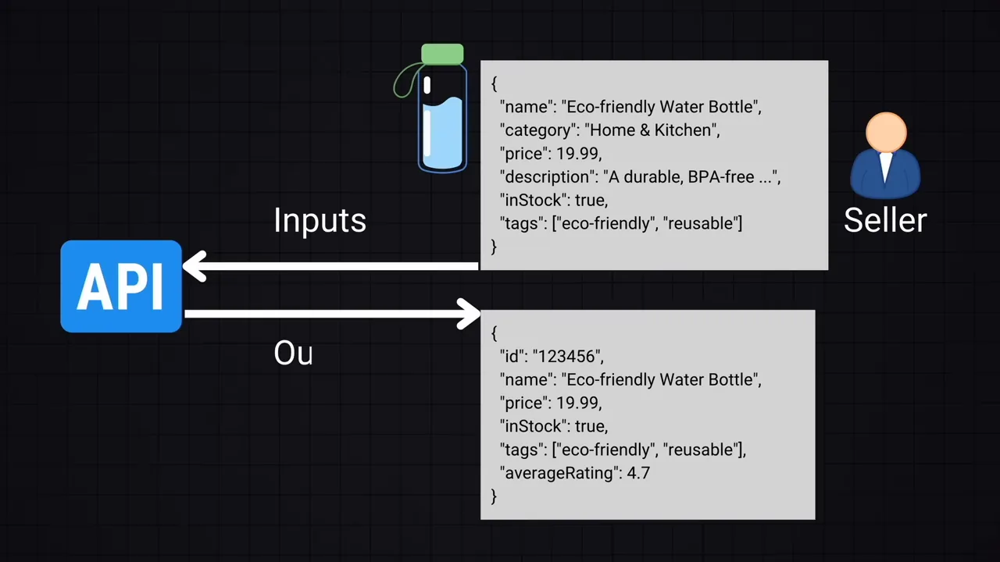
그다음은 CRUD(Create, Read, Update, Delete)를 어떻게 드러낼지 정하는 일이에요. 슬라이드 오른쪽 끝 색깔 꼬리표가 메서드예요. 생성은 POST /api/products로 본문에 상품 정보를 담아요. 목록 조회는 GET /api/products, 수정은 PUT이나 PATCH /api/products/:id, 삭제는 DELETE /api/products/:id예요. 상품 하나만 가져오는 GET /api/products/:id도 둘 수 있어요.
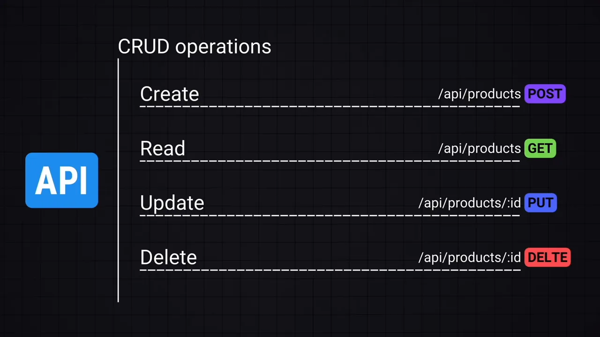
통신 프로토콜(HTTP, WebSocket 등)과 데이터 형식(JSON(JavaScript Object Notation), XML(Extensible Markup Language), 프로토콜 버퍼)도 골라야 해요.
REST, GraphQL, gRPC
API에는 방식이 여럿 있어요. 슬라이드는 세 칸을 나란히 두고 초록 점은 장점, 빨간 점은 단점으로 표시했어요.
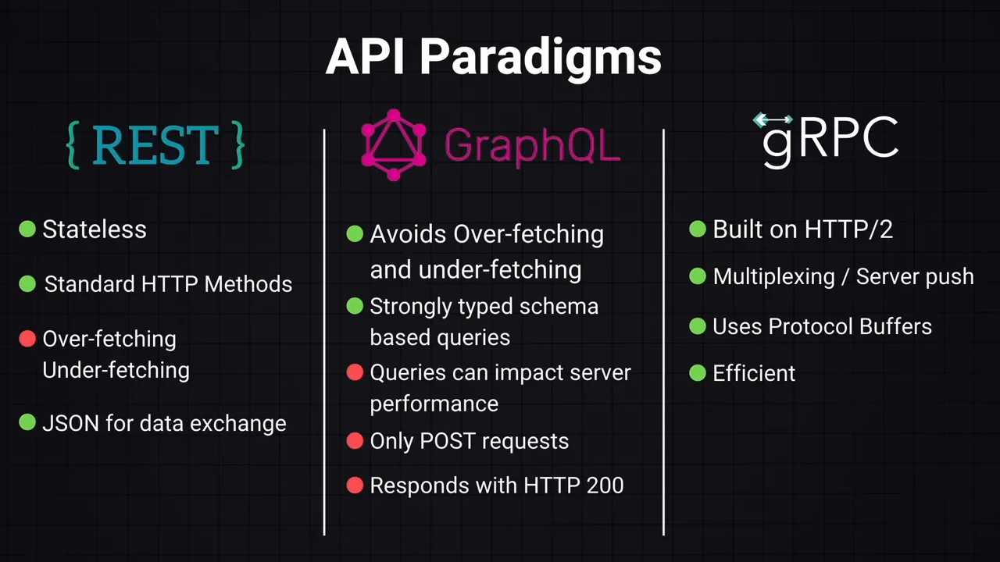
| REST | GraphQL | gRPC | |
|---|---|---|---|
| 장점 | 상태가 없고 표준 HTTP 메서드를 써서 브라우저든 모바일 앱이든 쓰기 쉬워요 | 클라이언트가 필요한 것만 정확히 요청해요. 쿼리의 타입이 엄격해요 | HTTP/2 위에서 멀티플렉싱을 써요. 프로토콜 버퍼로 대역폭과 자원을 아껴요 |
| 단점 | 엔드포인트가 고정돼 오버페칭·언더페칭이 생기기 쉬워요 | 복잡한 쿼리가 서버를 무겁게 해요 | JSON보다 사람이 읽기 어렵고, HTTP/2 지원이 필요해요 |
| 특징 | 보통 JSON으로 주고받아요 | 모든 요청이 POST예요. 오류가 나도 보통 HTTP 200에 오류 내용을 본문에 담아요 | 마이크로서비스 사이 통신에 특히 맞아요 |
좋은 API의 습관
전자상거래에는 사용자와 주문, 주문과 상품 같은 관계가 있어요. 엔드포인트도 이 관계를 드러내야 해요. 아래 슬라이드는 특정 사용자의 주문을 가져오는 GET /api/v1/users/:userId/orders예요. 그림 아래쪽에서 여러 장바구니 중 빨간 동그라미 친 하나가 그 사용자의 주문이에요.
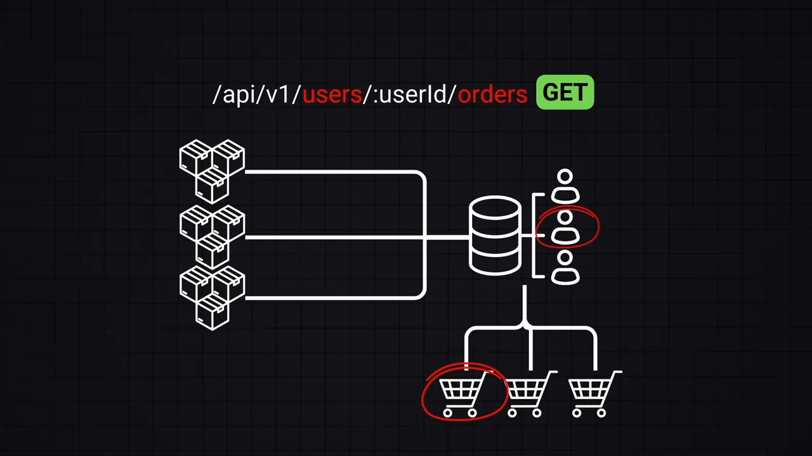
목록 조회에는 쿼리 파라미터를 붙여요. 슬라이드 위 줄은 limit=100&offset=0으로 페이지를 나누고, 아래 줄은 startDate·endDate로 기간을 걸러요. 시스템을 한 번에 압도하지 않고 필요한 만큼만 가져가게 해 줘요. 왼쪽 위 꼬리표 Idempotent가 이 GET 요청들이 지켜야 할 성질이에요.
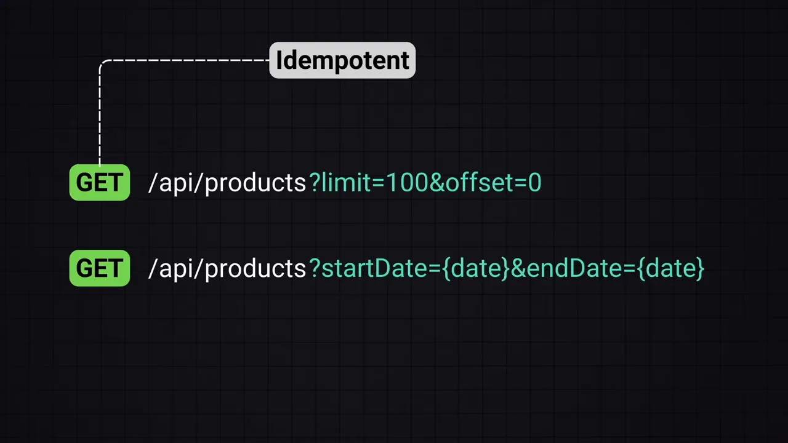
강의는 GET이 멱등성을 지켜야 하고, 조회만 해야 한다고 강조해요. 데이터를 만들거나 바꾸려면 POST나 PUT을 써요.
엔드포인트를 바꿀 때는 하위 호환을 지켜야 해요. 기존 클라이언트가 깨지면 안 되니까요. 슬라이드에서 /api/v2/products는 Current Clients로, /api/v1/products는 Old Clients로 이어져요. 새 버전을 따로 열어 두 버전을 함께 운영하는 방식이에요. GraphQL이라면 옛 필드를 지우지 않고 새 필드를 더해서 API를 키워요.
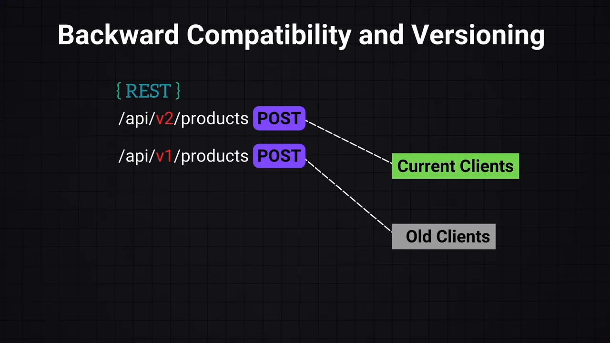
마지막 두 가지는 보호 장치예요. 레이트 리밋은 한 사용자가 정해진 시간에 보낼 수 있는 요청 수를 제한해서 DoS 공격을 막아요. CORS(Cross-Origin Resource Sharing) 설정은 어떤 도메인이 API를 부를 수 있는지 정해서 원치 않는 교차 사이트 요청을 막아요. 슬라이드에서 해커의 빨간 요청들은 Rate Limiter 자물쇠에 막혀 X 표시가 됐고, CORS 옆에는 허용된 도메인 세 개가 적혀 있어요.
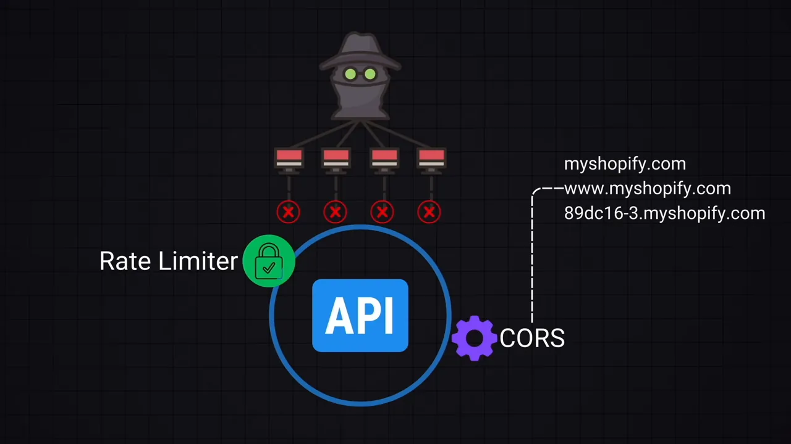
캐싱과 CDN
강의는 예로 시작해요. 핀란드의 구글 클라우드 데이터센터에 웹사이트를 둔 회사가 있어요. 유럽 사용자는 100ms 안에 페이지를 받지만, 멕시코 사용자는 3~5초를 기다릴 수 있어요. 지도에서 유럽 사용자 옆에는 100ms가 적혀 있고, 아메리카 사용자에게는 대서양을 건너는 긴 화살표가 그려져 있어요. 각 지역 가까이 서버를 두면 양쪽 모두 100ms가 돼요.
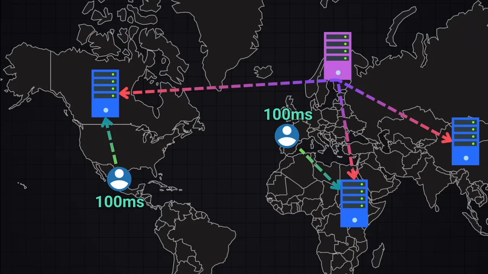
캐싱은 데이터 사본을 임시 저장소에 두고 다음 요청을 더 빨리 처리하는 기법이에요. 강의는 캐시를 두는 곳 네 군데를 차례로 봐요.
브라우저 캐시
사이트의 HTML(HyperText Markup Language), CSS(Cascading Style Sheets), JS(JavaScript) 번들 파일을 사용자 컴퓨터의 캐시 폴더에 둬요. 다시 방문하면 서버에서 다시 받지 않고 로컬에서 불러와요. 크롬이라면 개발자 도구 네트워크 탭의 Disable cache로 캐시를 끌 수 있어요. 얼마나 오래 둘지는 Cache-Control 헤더로 알려 줘요. 아래 화면 응답 헤더 중간쯤 Cache-Control 줄에 max-age=7200이 보여요. 7,200초, 즉 2시간이에요.
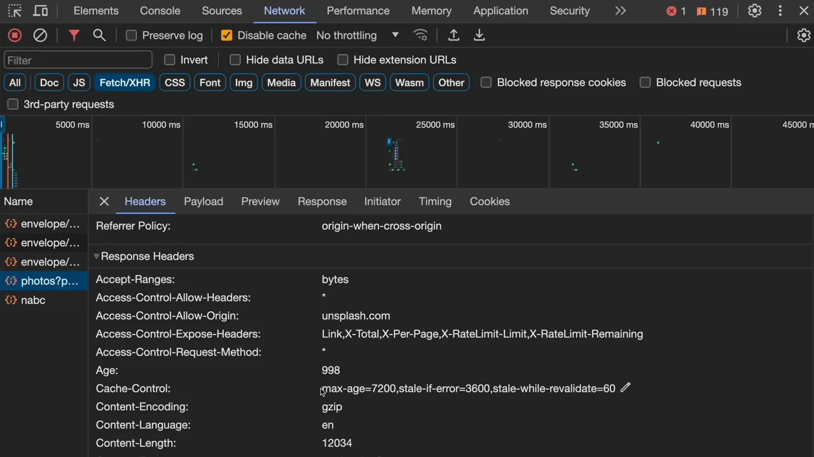
요청한 데이터가 캐시에 있으면 캐시 히트, 없어서 원본에서 가져와야 하면 캐시 미스예요. 전체 요청 중 캐시에서 처리한 비율이 캐시 히트율이고, 높을수록 캐시가 제 몫을 하는 거예요. 히트인지 미스인지는 X-Cache 헤더로 확인해요. 아래 화면에서 파란색으로 선택한 X-Cache 값이 MISS, MISS예요. 캐시에 있었다면 HIT가 떠요.
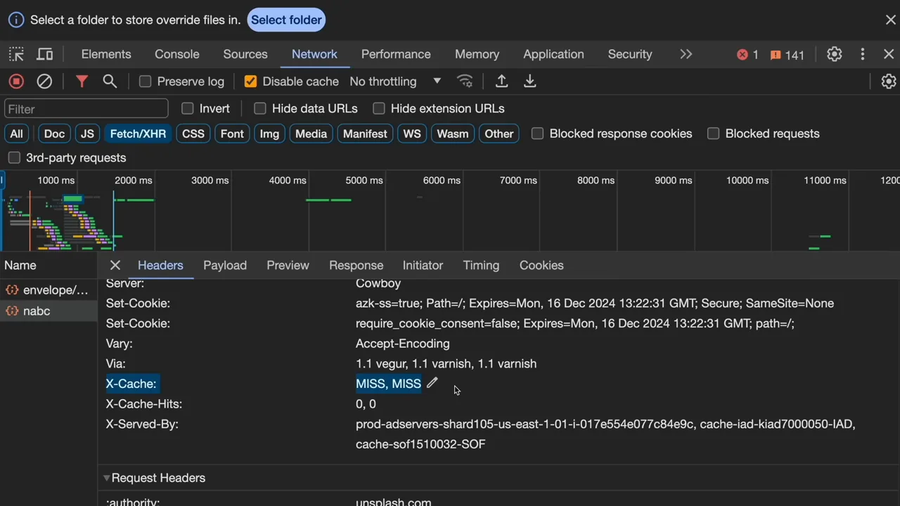
서버 캐시와 쓰기 방식
서버 캐시는 자주 쓰는 데이터를 서버 쪽에 둬서 DB 조회 같은 비싼 작업을 줄여요. Redis처럼 메모리에 두거나 디스크에 두고, 같은 서버나 별도 캐시 서버에 올려요. 서버는 먼저 캐시를 보고, 있으면 바로 돌려줘요. 없으면 DB에서 가져와 사용자에게 돌려준 뒤 다음을 위해 캐시에 넣어요.
데이터를 쓸 때는 세 가지 방식이 있어요. 강의는 슬라이드 세 장으로 나눠 보여 주는데, 한 그림에 나란히 놓으면 차이가 더 잘 보여요.
라이트 어라운드는 쓰기 성능이 덜 중요할 때 써요. 라이트 스루는 캐시와 저장소가 늘 같아서 일관성은 좋지만, 두 곳에 다 써야 하니 더 느려요. 라이트 백은 캐시에만 쓰고 바로 끝내서 쓰기가 빠르지만, 저장소로 옮기기 전에 서버가 죽으면 그 데이터를 잃어요.
캐시가 가득 차면 무엇을 비울지 정해야 해요. 이 규칙이 제거 정책이에요. 슬라이드에는 캐시 옆에 상자가 쌓여 있고, 오른쪽에 LRU(Least Recently Used)와 FIFO(First In, First Out)가 적혀 있어요. 말로는 하나를 더 들어요. 가장 덜 자주 쓴 것을 지우는 LFU(Least Frequently Used)예요.
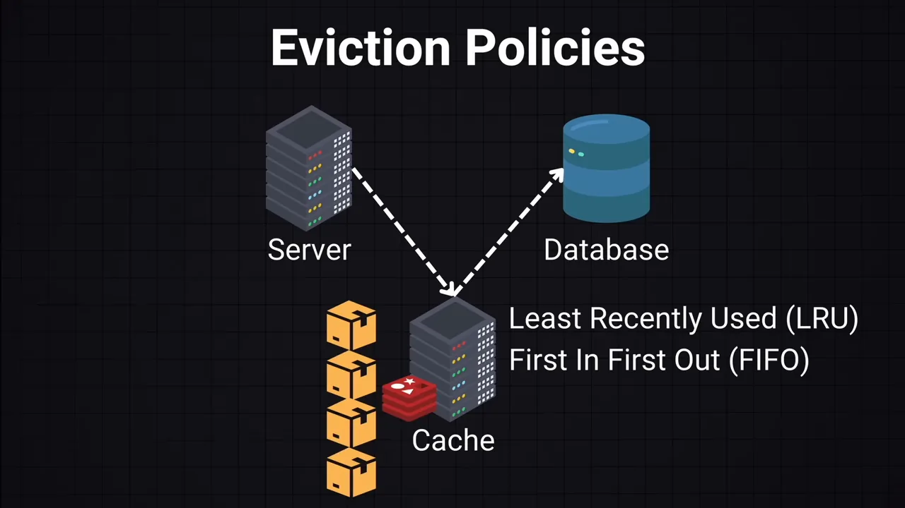
데이터베이스 캐시
DB 쿼리 결과를 캐시해 두는 방식이에요. DB 자체 기능을 쓰거나 Redis·Memcached 같은 외부 계층을 둬요. 아래 슬라이드에서 SQL 쿼리는 DB로 바로 가지 않고 가운데 Memcached를 먼저 거쳐요. 결과가 있으면 거기서 돌려주고, 없으면 DB에서 실행한 뒤 결과를 캐시에 넣어요.
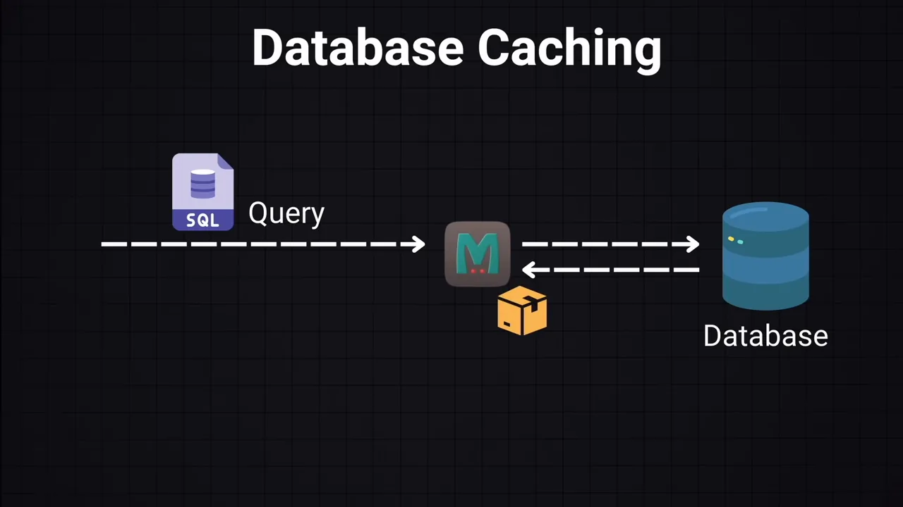
CDN: 가까운 서버에서 내려주기
CDN은 지리적으로 흩어진 서버 네트워크예요. JS, HTML, CSS, 이미지, 영상 같은 정적 파일을 원본 서버에서 가져와 캐시한 뒤, 사용자와 가장 가까운 CDN 서버에서 내려줘요. 가져오는 방식이 둘이에요.
풀 방식에서는 사용자가 가까운 CDN 서버에 요청하고, 그 서버에 파일이 없으면 원본에서 가져와 캐시한 뒤 넘겨줘요. 아래 지도에서 아프리카 CDN 서버가 유럽의 보라색 원본에서 파일을 끌어와 오른쪽 사용자에게 주고 있어요.
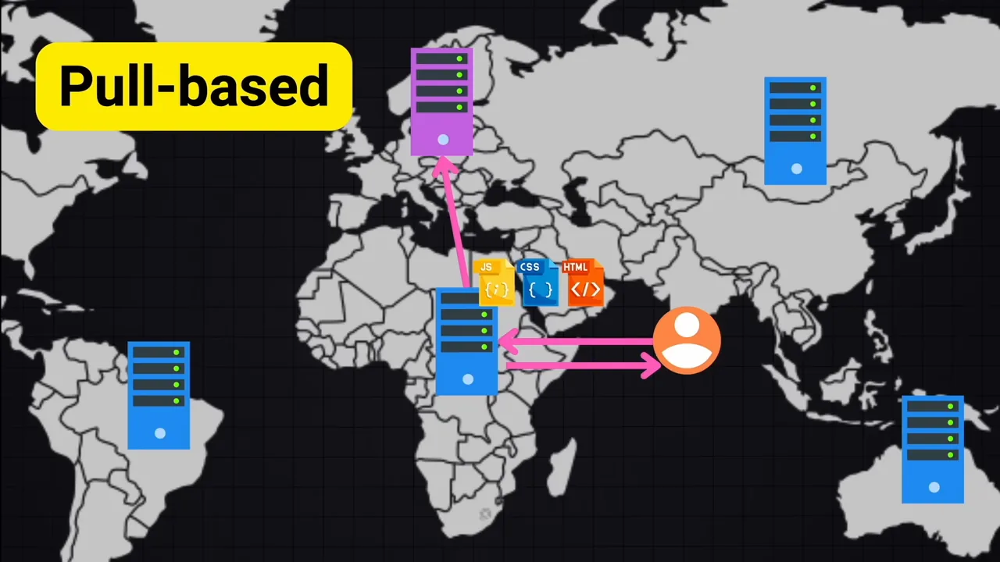
푸시 방식은 반대예요. 원본에 올린 파일을 원본이 미리 여러 CDN 서버에 뿌려요. 지도에서 보라색 원본에서 화살표가 사방의 CDN 서버로 동시에 뻗어 있어요. 무엇을 올릴지 직접 챙겨야 해서 관리가 더 들어요.
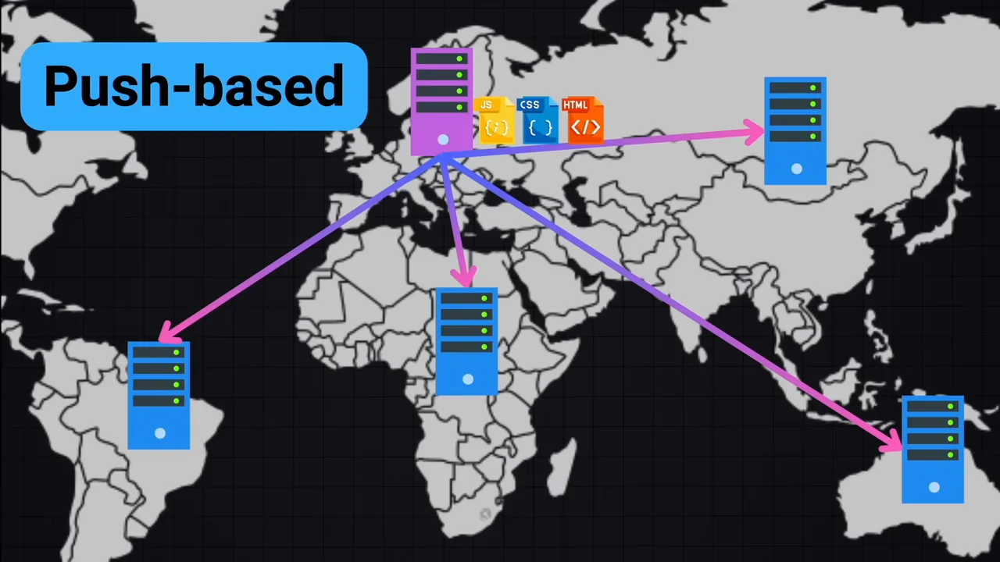
CDN이 만능은 아니에요. 아래 슬라이드 위쪽은 CDN을 쓸 때, 아래쪽은 원본 서버로 가야 할 때예요. 첫 줄에 초록 테두리로 강조한 건 이미지·CSS·JS·영상 같은 정적 자산이에요. 반대로 자주 바뀌거나 사용자마다 다른 동적 콘텐츠, 실시간 처리, CDN이 흉내 낼 수 없는 복잡한 서버 로직은 원본 서버가 맡아요.
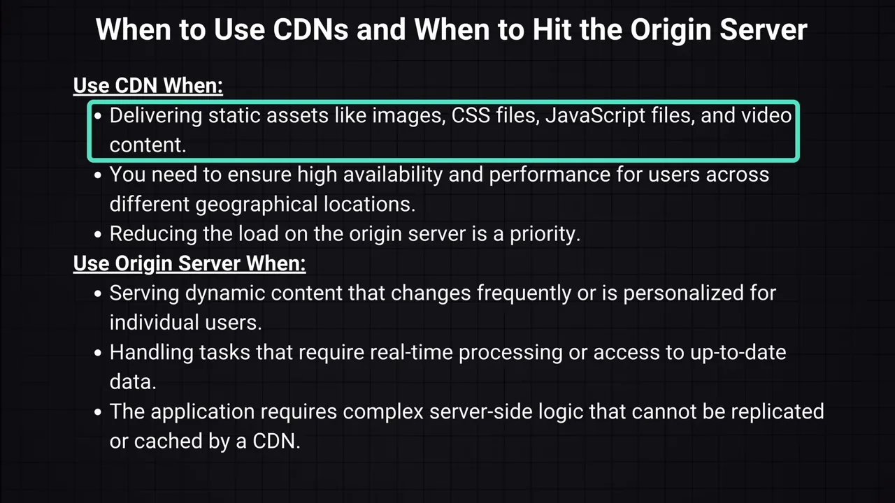
정리하면 CDN은 사용자 가까이에서 내려줘 지연을 줄이고, 트래픽이 몰리거나 하드웨어가 고장 나도 버텨 가용성과 확장성을 높여요. 많은 CDN이 DDoS 방어와 암호화 같은 보안 기능도 줘요. 캐싱 전체로 보면 지연이 줄고, 원본 서버 부하가 줄고, 빨라진 만큼 사용자 경험이 좋아져요.
프록시와 로드 밸런서
프록시 서버는 리소스를 요청하는 클라이언트와 그걸 주는 서버 사이에 선 중간자예요. 클라이언트의 요청을 받아 서버에 넘기고, 서버의 응답을 다시 클라이언트에게 돌려줘요. 그 과정에서 캐싱, 요청 익명화, 여러 서버 사이 부하 분산 같은 일을 해요.
강의는 일곱 종류를 나열해요. 슬라이드에서 맨 위 두 개, 포워드와 리버스 프록시에만 테두리가 쳐져 있어요. 가장 많이 쓰는 두 가지라서예요.
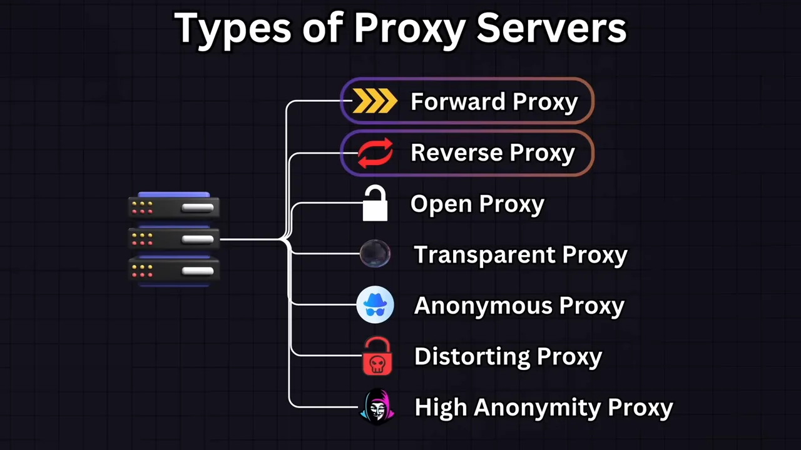
- 오픈 프록시: 누구나 접속해 쓸 수 있어요. 익명 브라우징이나 콘텐츠 제한 우회에 써요.
- 투명 프록시: 요청을 바꾸지 않고 넘기지만 클라이언트에게 보여요. 캐싱과 콘텐츠 필터링에 써요.
- 익명 프록시: 프록시라는 건 드러나지만 원래 IP는 숨겨요.
- 왜곡 프록시: 익명 프록시와 비슷하지만 일부러 틀린 원래 IP를 목적지에 알려 줘요.
- 고익명(엘리트) 프록시: X-Forwarded-For 같은 식별 헤더를 보내지 않아 프록시를 쓴다는 사실조차 알아채기 어려워요.
포워드 프록시와 리버스 프록시
두 프록시는 서는 자리가 반대예요. 무엇을 숨기는지도 반대예요. 강의가 따로 설명한 두 그림을 한 장에 겹쳐 봤어요.
포워드 프록시는 클라이언트 앞에 서요. 내부망 컴퓨터가 요청하면 먼저 프록시로 가고, 프록시가 설정과 규칙에 따라 허용, 수정, 차단을 정해요. 가장 중요한 일은 클라이언트 IP를 숨기는 거예요. 아래 슬라이드에서 클라이언트의 IP는 192.158.1.38이지만, 서버에는 프록시의 192.0.2.1에서 요청이 온 것처럼 보여요.
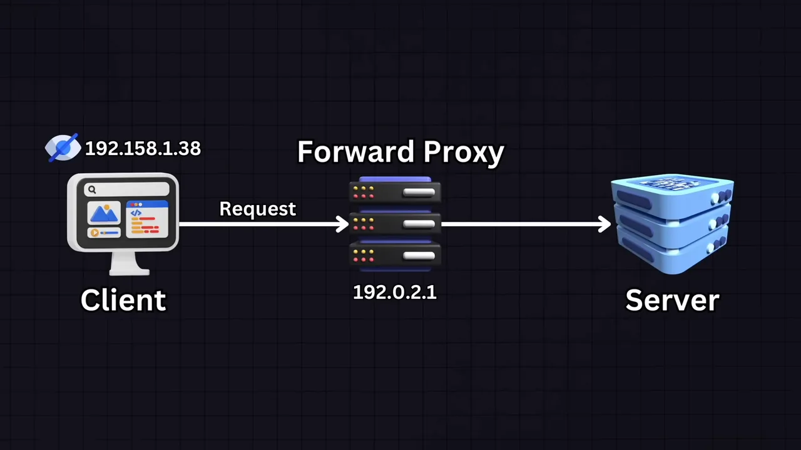
쓰임새는 슬라이드의 네 항목이에요. 인스타그램 프록시는 마케터나 소셜 미디어 관리자가 여러 계정을 운영할 때, 다른 지역이나 다른 사용자처럼 보여 차단을 피하는 데 써요. 회사는 직원의 인터넷 사용을 통제하고 바이러스와 악성 코드를 검사해요. 인기 있는 콘텐츠를 캐싱해 대역폭이 비싸거나 좁은 네트워크를 아끼고, 개인 정보가 걱정되는 사람은 IP를 숨겨 추적을 어렵게 해요.
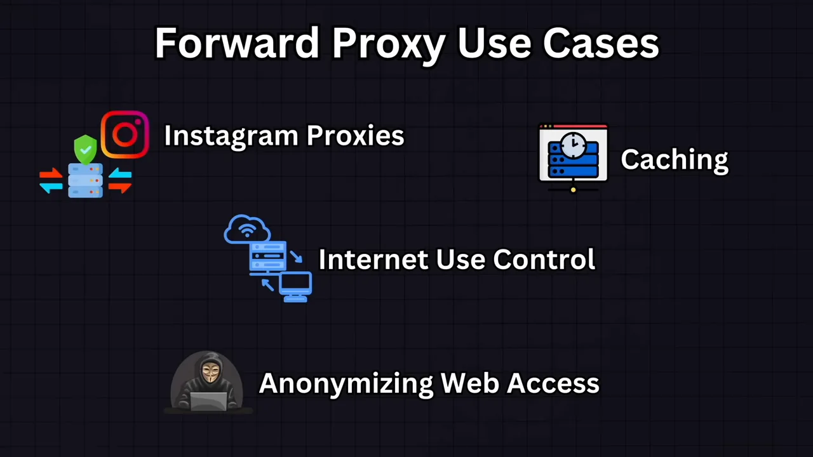
리버스 프록시는 웹 서버 앞에 서서 인터넷에서 온 요청을 서버보다 먼저 받아요. 포워드 프록시가 클라이언트를 숨긴다면, 리버스 프록시는 서버를 숨기고 뒤에 서버가 여러 대라는 사실까지 감춰요. 클라이언트는 리버스 프록시하고만 이야기해요. 슬라이드에서 요청 하나가 리버스 프록시를 지나 오른쪽 서버 세 대로 나뉘어 가요.
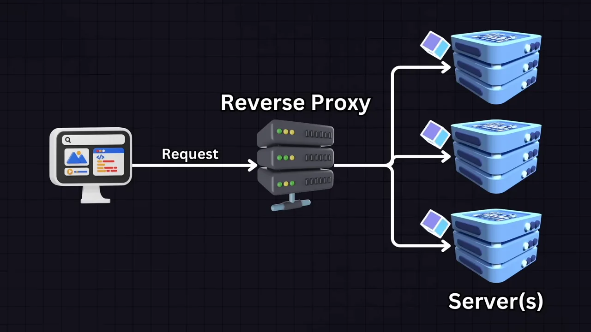
리버스 프록시는 들고 나는 데이터 압축, 파일 캐싱, SSL(Secure Sockets Layer) 암호화 관리도 맡아요. 강의가 꼽은 쓰임새는 네 가지예요. 로드 밸런서는 트래픽을 여러 서버에 나눠 병목을 막아요. CDN은 원본에서 가져온 정적 콘텐츠를 사용자 가까이에서 내려주니 리버스 프록시의 한 종류예요. 웹 방화벽(WAF(Web Application Firewall))은 들어오는 트래픽을 검사해 해킹 시도를 막아요. SSL 오프로딩은 SSL/TLS 암호화와 복호화를 웹 서버 대신 처리해 서버 성능을 아껴요.
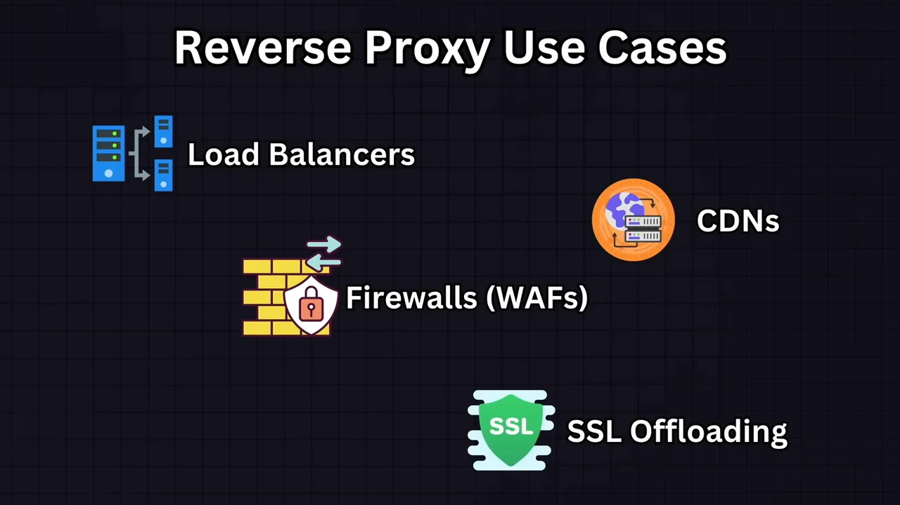
로드 밸런서는 어떻게 고르나요
로드 밸런서는 프록시 서버의 가장 대표적인 쓰임이에요. 들어오는 트래픽을 여러 서버에 나눠 용량과 신뢰성을 높여요. 아래 슬라이드가 기본 모양이에요. 왼쪽 클라이언트 세 대의 요청이 가운데 로드 밸런서로 모이고, 오른쪽 서버 네 대에 하나씩 보라색 점으로 나뉘어 가요. 이게 라운드 로빈이에요.
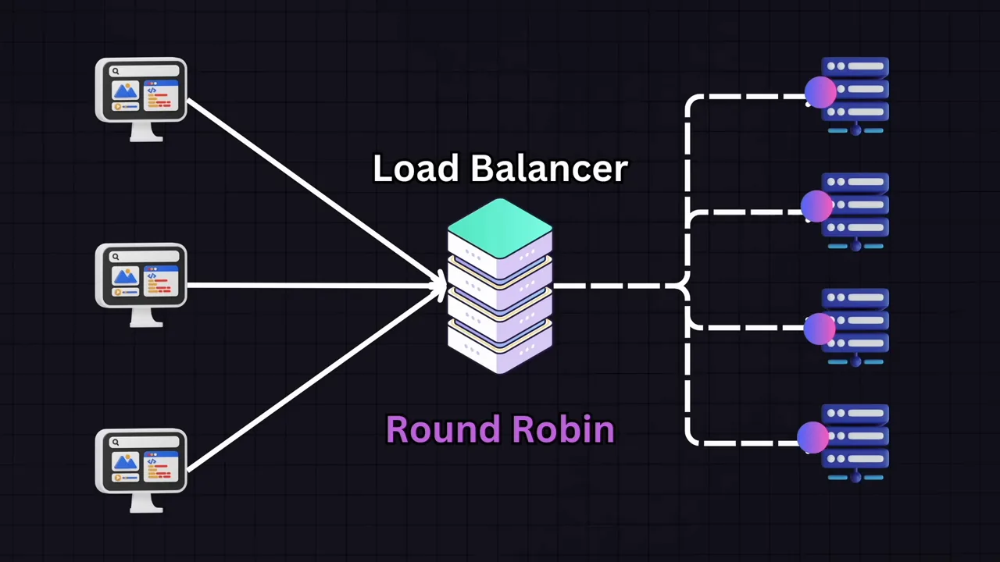
강의가 소개한 알고리즘을 표로 모았어요.
| 알고리즘 | 어떻게 고르나요 | 언제 좋나요 |
|---|---|---|
| 라운드 로빈 | 서버를 차례로 돌아가며, 끝에 가면 처음으로 | 서버 사양이 비슷하고 부하가 고를 때 |
| 최소 연결 | 활성 연결이 가장 적은 서버 | 작업이 길거나 부하가 고르지 않을 때 |
| 최소 응답 시간 | 응답이 가장 빠르고 연결이 적은 서버 | 가장 빠른 응답이 목표일 때 |
| IP 해시 | 클라이언트 IP의 해시값으로 정한 서버 | 같은 사용자가 늘 같은 서버로 가야 할 때(세션 유지) |
| 가중치 방식 | 성능에 따라 가중치를 줘 센 서버가 더 많이 | CPU나 RAM이 서버마다 다를 때 |
| 지리 기반 | 사용자와 가장 가까운 서버, 또는 지역 요건에 맞는 서버 | 지연을 줄여야 하는 글로벌 서비스 |
| 일관된 해싱 | 원형 해시 링 위에 노드와 키를 올려 정한 서버 | 같은 클라이언트를 같은 서버로 꾸준히 보낼 때 |
IP 해시 슬라이드에서는 서버마다 IP가 적혀 있고, 보라색 점이 세 번째 서버(192.158.1.45) 하나에만 있어요. 같은 클라이언트 IP는 해시값이 같으니 늘 같은 서버로 가요.
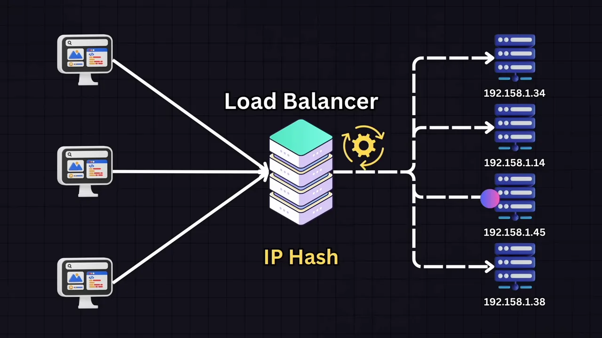
일관된 해싱은 해시 공간을 끝과 처음이 이어진 원, 즉 해시 링으로 상상해요. 노드와 데이터 키를 모두 이 링 위에 해시해서 올려요. 슬라이드 그림은 라운드 로빈과 비슷해 보이지만, 같은 클라이언트가 매번 같은 서버로 이어지는 게 요점이에요.
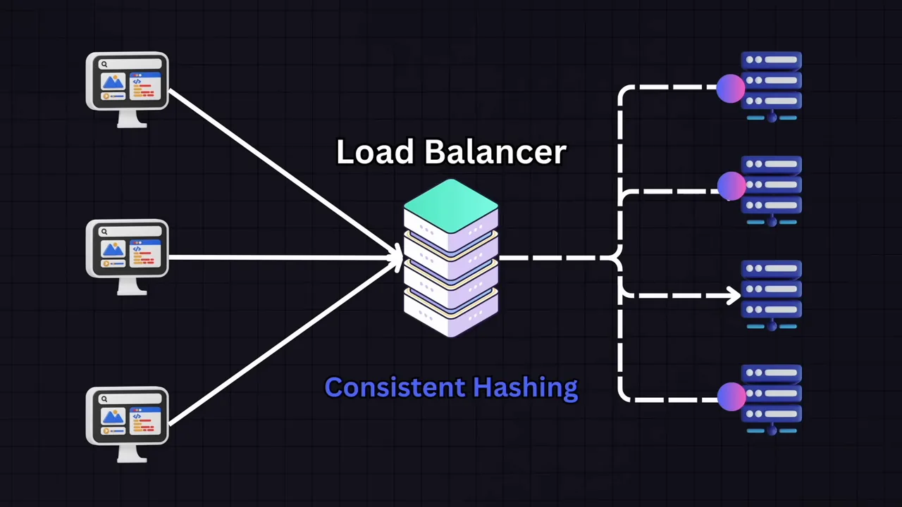
어떤 알고리즘을 쓰든 헬스 체크는 꼭 있어요. 서버가 살아 응답하는지 계속 확인해서, 죽은 서버에는 다시 살아날 때까지 트래픽을 보내지 않아요.
로드 밸런서의 형태도 여럿이에요. 슬라이드 위 왼쪽은 하드웨어로 F5 BIG-IP와 Citrix(옛 이름 NetScaler), 오른쪽은 소프트웨어로 HAProxy와 Nginx예요. 아래 줄은 클라우드로 AWS(Amazon Web Services) Elastic Load Balancing, Azure Load Balancer, Google Cloud 로드 밸런서예요. 말로는 VMware Advanced Load Balancer 같은 가상 로드 밸런서도 덧붙여요.
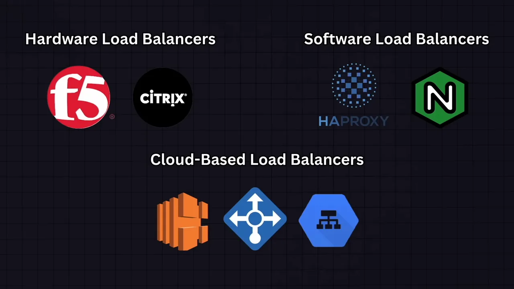
로드 밸런서가 죽으면요
로드 밸런서는 그 자체가 단일 장애 지점이에요. 이게 죽으면 뒤의 서버가 멀쩡해도 클라이언트가 닿을 수 없어요. 강의는 대비책 네 가지를 들어요. 첫째, 로드 밸런서를 보통 둘씩 짝으로 둬요. 하나가 죽으면 다른 쪽이 넘겨받는데, 이걸 장애 조치라고 해요. 아래 슬라이드가 그 모습이에요.
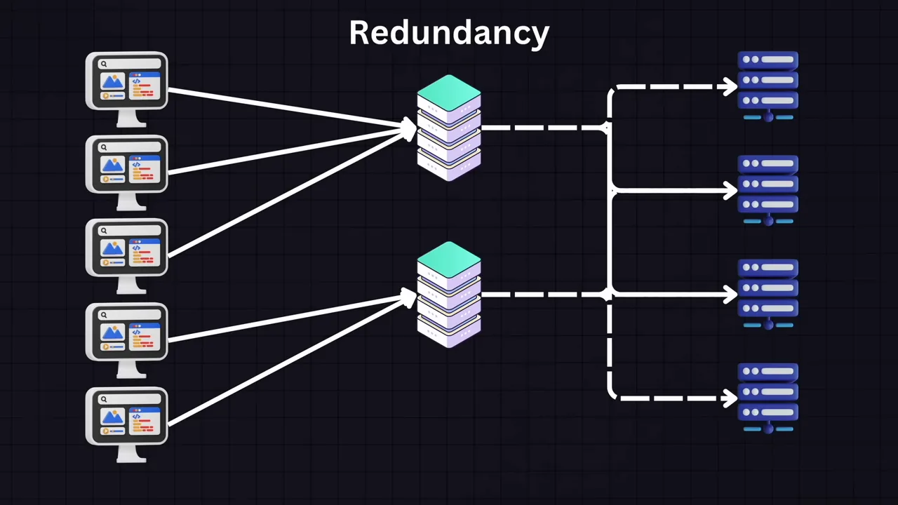
둘째, 로드 밸런서 자체도 헬스 체크와 모니터링을 해서 문제를 일찍 잡아요. 셋째, 자동 확장과 자가 치유 시스템으로 로드 밸런서가 죽으면 사람 손 없이 새 인스턴스로 바꿔요. 넷째, DNS 장애 조치로 더 이상 연결을 받지 않는 IP 대신 미리 정해 둔 대기 IP로 트래픽을 돌려요. 아래 슬라이드에서 위쪽 로드 밸런서에 X 표시가 붙고, 클라이언트 다섯 대의 선이 모두 아래쪽 로드 밸런서로 몰렸어요.
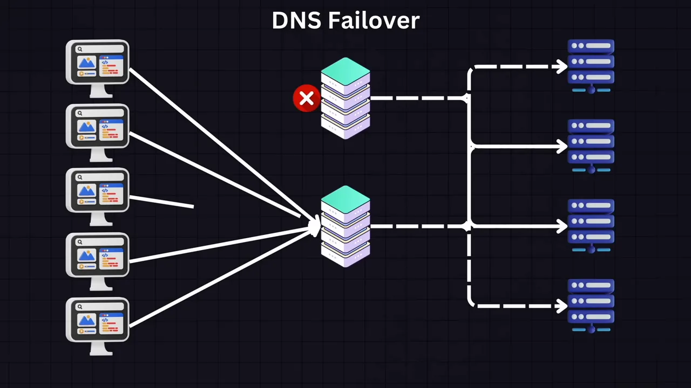
데이터베이스: 종류, 확장, 성능
강의는 시스템 디자인 면접이 데이터베이스 없이는 끝나지 않는다고 말해요. 마지막 섹션은 DB 종류, 확장 방법, 성능 기법을 다뤄요.
세 종류의 데이터베이스
관계형 DB는 서류가 서랍과 폴더에 가지런히 정리된 캐비닛 같아요. 슬라이드에 나온 대표 제품은 PostgreSQL, MySQL, SQLite예요. 모두 테이블에 데이터를 저장하고 SQL로 조회해요. 트랜잭션, 복잡한 쿼리, 데이터 무결성에 강해요.
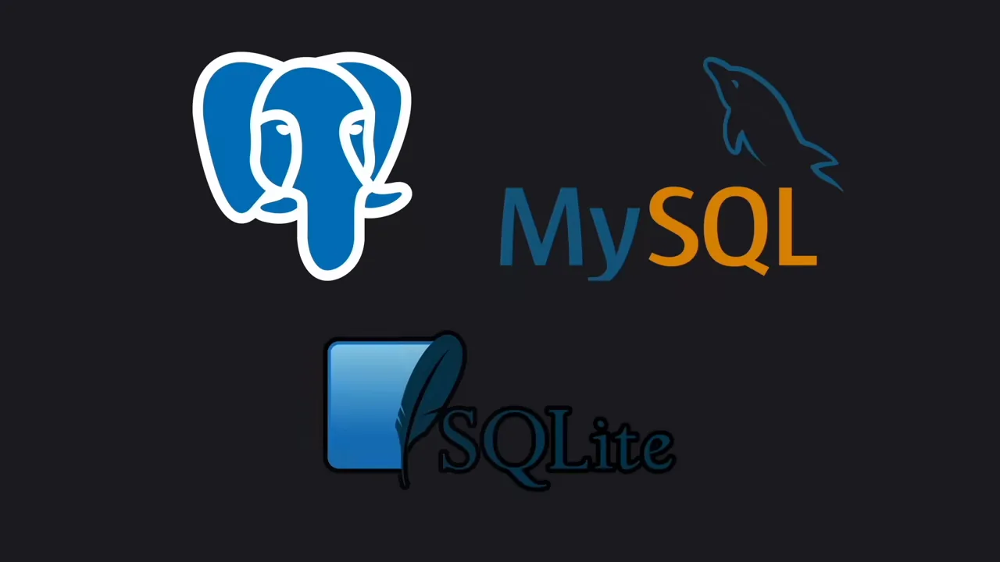
관계형 DB는 ACID(Atomicity, Consistency, Isolation, Durability)를 지켜요. 슬라이드의 네 줄이 네 글자예요.
- 원자성(Atomicity): 트랜잭션은 전부 되거나 전부 안 돼요.
- 일관성(Consistency): 트랜잭션이 끝나면 DB가 일관된 상태여야 해요.
- 격리성(Isolation): 트랜잭션끼리 서로 독립적이어야 해요.
- 지속성(Durability): 커밋된 데이터는 계속 남아요.
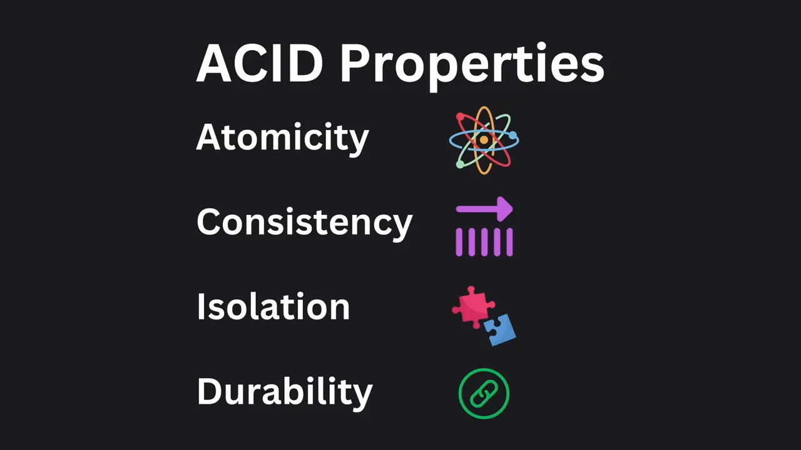
NoSQL DB는 강의 표현으로 ACID에서 일관성을 내려놓은 DB예요. 다음 슬라이드가 그걸 그대로 보여 줘요. ACID의 C에 빨간 줄이 그어져 있어요. 강의는 NoSQL을 포스트잇을 아무 모양으로나 붙였다 뗐다 하는 브레인스토밍 보드에 비유해요. 그만큼 유연하다는 뜻이에요.
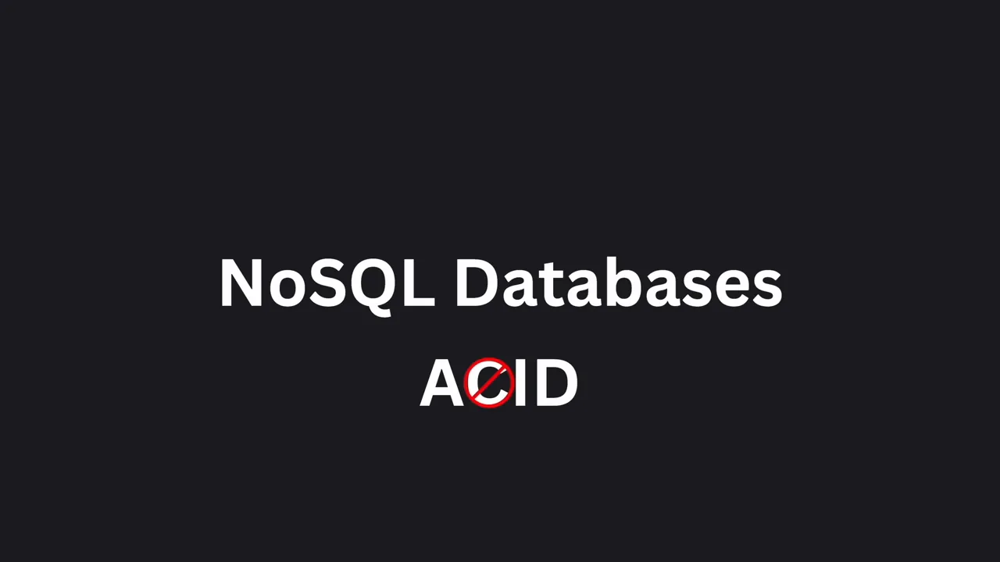
NoSQL에는 키-값(Redis), 문서(MongoDB), 그래프(Neo4j) 같은 종류가 있어요. 아래 슬라이드 왼쪽이 세 종류의 아이콘이고, 오른쪽은 외래 키로 이어진 테이블 그림에 큰 X가 그어져 있어요. 스키마가 없고 테이블 사이 외래 키도 없다는 뜻이에요. 맨 아래 문장처럼 확장, 빠른 반복, 단순한 쿼리에 맞고, 비정형 데이터에도 좋아요.
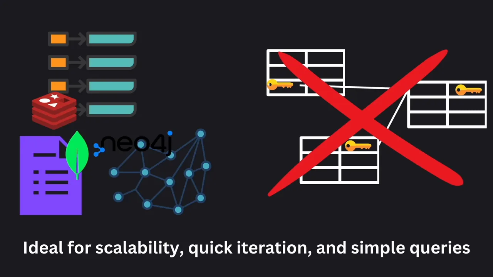
인메모리 DB는 빠른 계산과 임시 스케치를 하는 화이트보드 같아요. Redis와 Memcached처럼 모든 데이터를 메모리에 둬서 아주 빨라요. 그래서 주로 캐시와 세션 저장에 써요.
위로 키울까, 옆으로 늘릴까
DB를 키우는 방향은 둘이에요. 슬라이드 왼쪽 수직 확장(Scale Up)은 서버 한 대를 더 세게 만드는 거예요. 아래 네 줄처럼 CPU를 올리고, RAM을 더하고, 디스크를 늘리고, 네트워크를 업그레이드해요. 하지만 한 대에 넣을 수 있는 자원에는 한계가 있어요. 오른쪽 수평 확장(Scale Out)은 서버를 더 붙이는 거예요. 데이터를 여러 서버로 나누는 방법이 아래 두 줄, 샤딩과 복제예요.
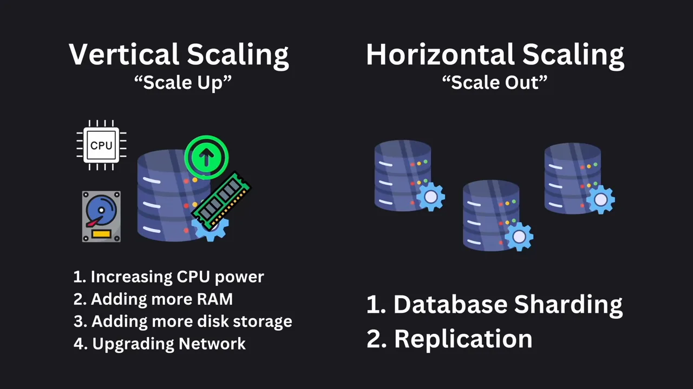
샤딩은 데이터를 작은 조각, 즉 샤드로 나눠 여러 서버에 흩는 거예요. 아래 슬라이드는 범위 기반 샤딩이에요. ID(Identifier) 1~4번 행은 위쪽 DB로, 5~8번 행은 아래쪽 DB로 가요. 강의는 이 밖에 조회 서비스가 어느 DB로 갈지 알려 주는 디렉터리 기반, 지역별로 나누는 지리 기반 샤딩도 들어요.
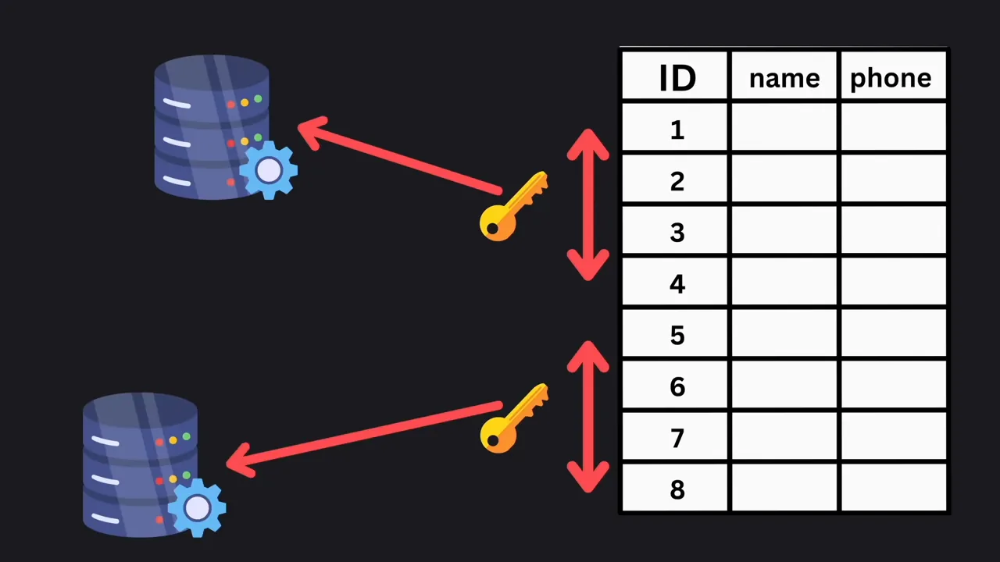
복제는 같은 데이터의 사본을 여러 서버에 둬 가용성을 높이는 거예요. 슬라이드 왼쪽은 마스터-슬레이브 복제예요. 마스터 하나가 읽기와 쓰기를 받고, 슬레이브 둘은 읽기만 해요. 오른쪽은 마스터-마스터 복제로, 두 DB가 모두 읽고 써요.
더 빨리 읽는 세 가지 기법
확장만큼 중요한 게 빨리 읽는 거예요. 슬라이드에 세 가지가 있어요. 왼쪽 캐싱은 Redis 같은 인메모리 DB에 자주 쓰는 쿼리 결과를 두는 거예요. 아래 인덱싱은 자주 조회하는 열에 인덱스를 만들어 조회 시간을 크게 줄여요. 오른쪽 쿼리 최적화는 조인을 줄이고, SQL 쿼리 분석기나 EXPLAIN 같은 도구로 쿼리 성능을 들여다보는 거예요.
강의는 CAP 정리로 끝을 맺어요. 일관성, 가용성, 파티션 내성 중 둘만 가질 수 있으니, 면접에서 주어진 요구사항을 보고 무엇을 우선할지 정하라는 거예요.
When designing a system you should prioritize two of these based on the requirements that you have given in the interview.
시스템을 설계할 때는 면접에서 받은 요구사항에 따라 이 중 두 가지를 우선해야 해요.
— 영상 53:19